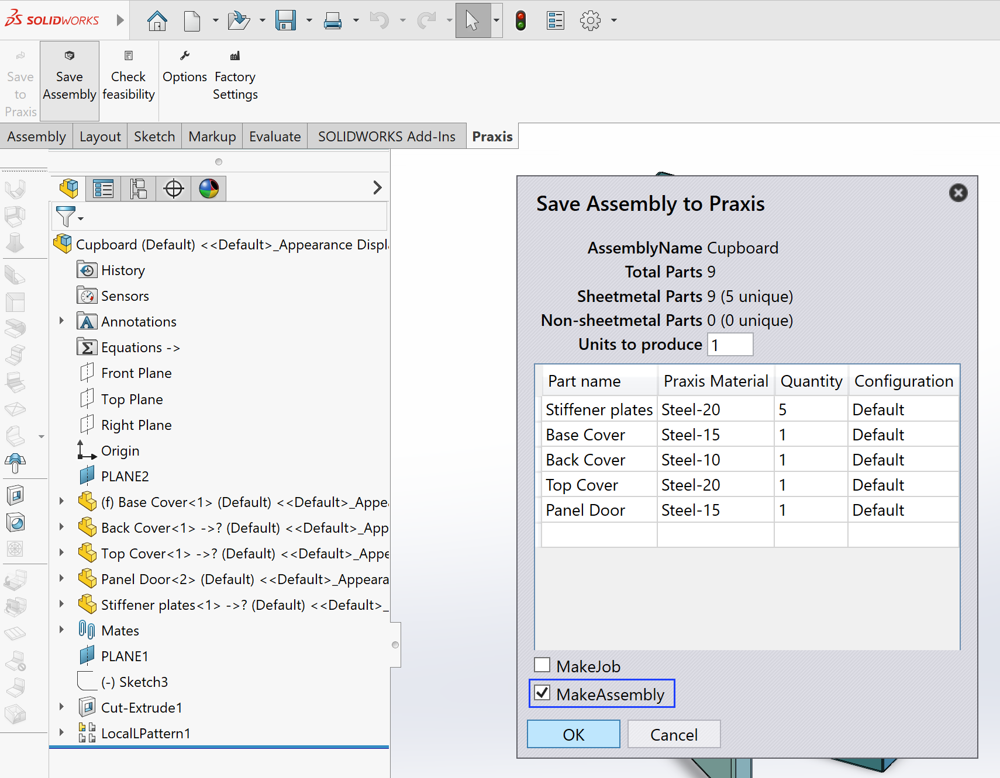
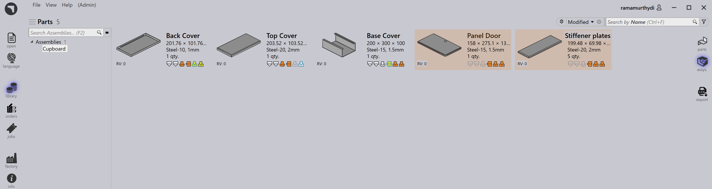

Uložení sestavy
Funkce Uložení sestavy umožňuje uživatelům exportovat sestavy SolidWorks a jejich součásti přímo do knihovny dílů TruSmartCAM. To zajišťuje, že všechny díly z plechu, informace o surovém materiálu a množství dílů jsou přesně přeneseny pro následné plánování, nástroje a vytváření úloh.
Tato funkcionalita je obzvláště užitečná pro správu kompletních sestav, jako jsou skříně, pouzdra nebo strukturální vyrobené díly, které zahrnují více komponent z plechu.
Kroky k uložení sestavy
-
Spušte SolidWorks a otevřete požadovaný soubor sestavy.

-
Na panelu nástrojů TruSmartCAM klikněte na Save Assembly. Zobrazí se dialogové okno Uložit konstrukční skupinu do Praxis, které shrnuje podrobnosti sestavy.

-
Dialogové okno sestavy poskytuje následující informace:
-
Assembly Name - Zobrazuje název aktuálně aktivní sestavy SolidWorks. Tento název se používá jako výchozí reference pro sestavu v TruSmartCAM.
-
Celkem díly - Označuje celkový počet instancí komponent přítomných v sestavě SolidWorks. To zahrnuje díly z plechu i jiné než z plechu.
-
Plechové díly - Zobrazuje celkový počet komponent z plechu v sestavě spolu s počtem jedinečných dílů z plechu.
-
Ne-plechové díly - Vypisuje celkový počet a jedinečný počet komponent nez plechu detekovanych v sestavě.
-
Jednotky k vyrobení - Specifikuje počet sestav (hotových produktů), které mají být vyrobeny. Zadané množství se používá k výpočtu celkových požadavků na díly v výsledné úloze nebo sestavě v TruSmartCAM.
-
-
Po ověření podrobností klikněte na OK.
-
TruSmartCAM uloží všechny díly uvedené v tabulce do knihovny dílů spolu s jejich přidruženými informacemi o materiálu. (Podrobnosti o mapování materiálu naleznete v Automaterial resolution)

Další možnosti
Vytvořit úlohu
-
Povolte tuto možnost pro vytvoření nové úlohy TruSmartCAM přímo z vybrané sestavy, což umožňuje okamžité plánování úloh a operace skládání.
-
Po povolení se zobrazí dialogové okno Nová úloha, které vám umožňuje zadat:
-
Název Job Reference (výchozí: název sestavy).
-
Customer a Comments (volitelné).
-
Due Date, Priority a Quantity pro každý díl.
-
Další parametry, jako jsou nastavení specifická pro zákazníka nebo hodnoty rotace pro každý díl.
-
Klikněte na OK pro vytvoření a otevření nové úlohy v TruSmartCAM.
-

Vytvořit sestavu
Povolte tuto možnost pro uložení sestavy a jejích správných množství dílů na stránku sestav TruSmartCAM. Na rozdíl od možnosti Vytvořit úlohu se během procesu neotevírá dialogové okno Nová úloha.


|